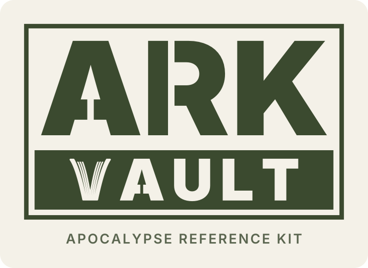
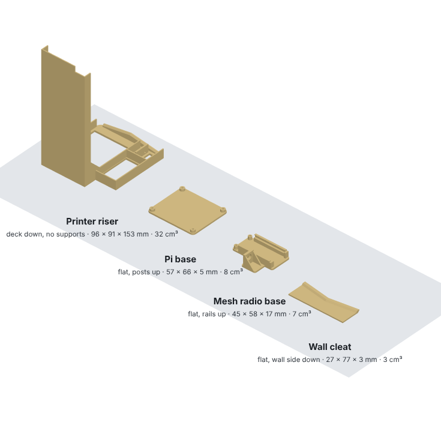
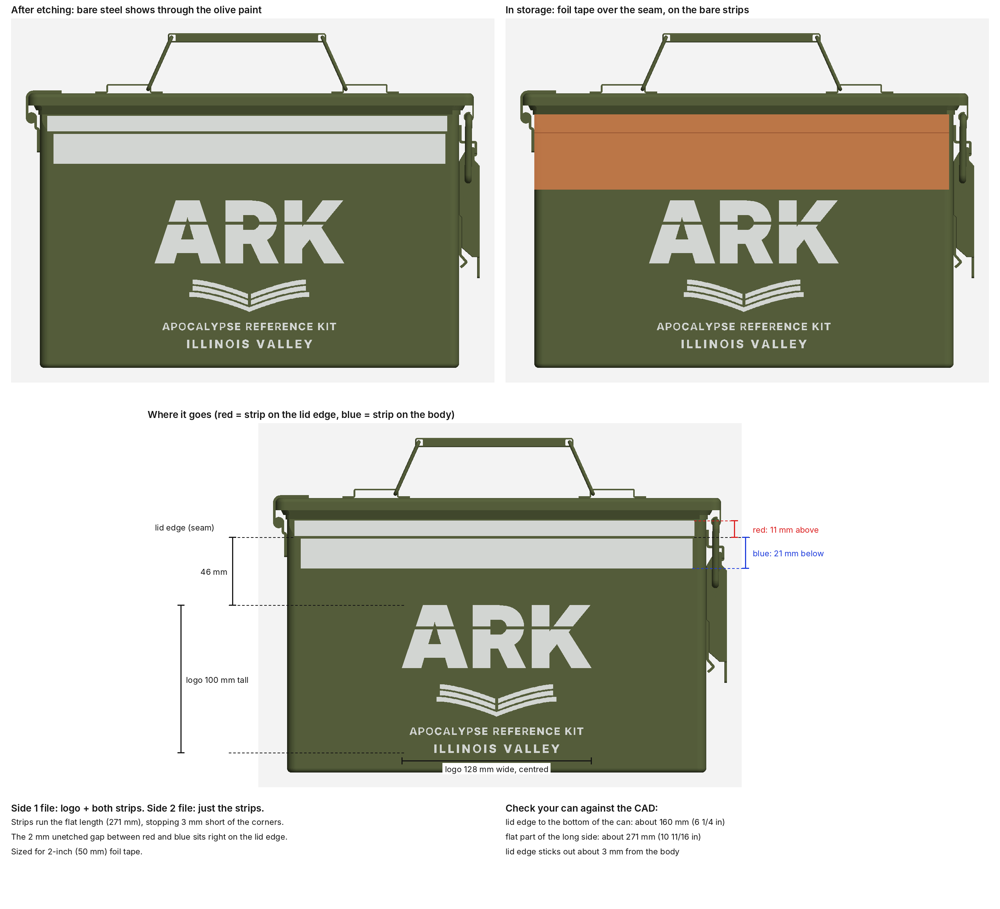
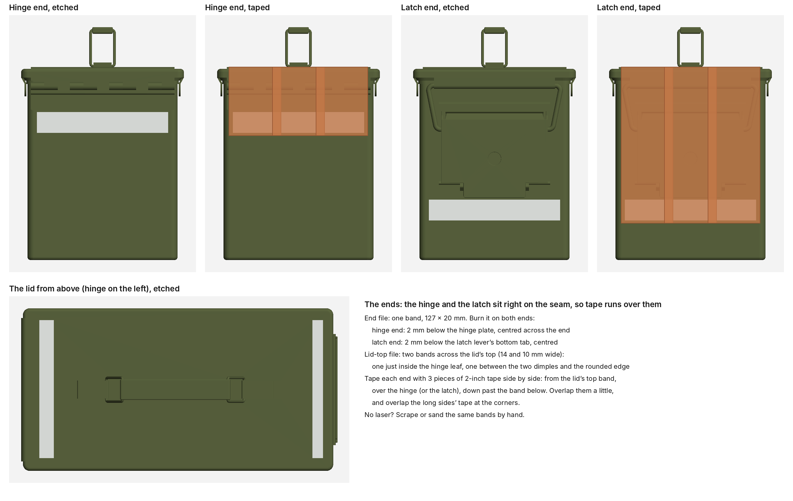
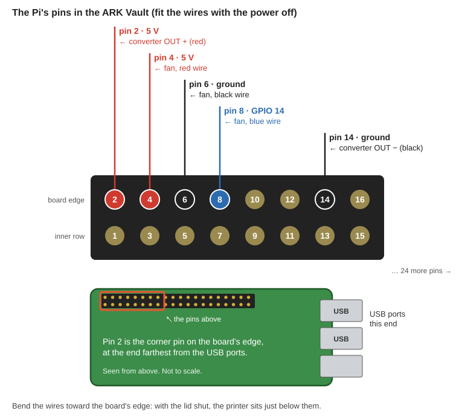
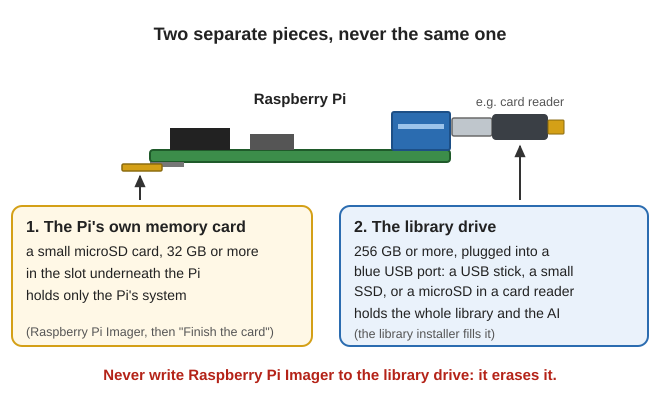
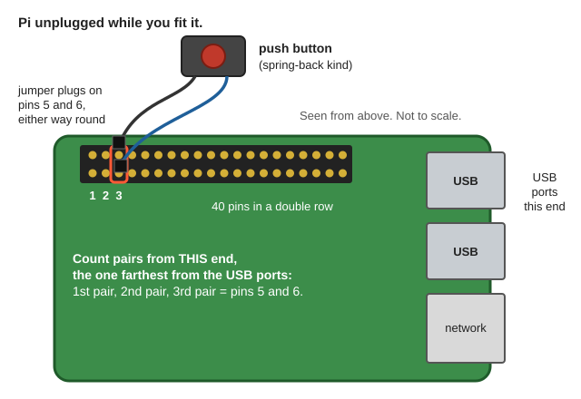

📘 Guides › 💾 Using this library · 🆘 Emergency · 📇 Index A–Z · 💬 Ask
🧰 ARK Vault: the Ammo-Can Library Computer

The ARK Vault is the whole library packed in one steel ammo can: a small computer (a Raspberry Pi), a battery, a charger, a little printer, a crank radio and an old phone to read it on.
Most of the time it sits sealed, lid taped shut, protected from an EMP or solar storm. When you need it, open the lid and flip the red switch on. The phone joins the Vault's own Wi-Fi and opens the library and the AI in its web browser. No internet, screen or keyboard needed.
The short version
- Switch on, switch off. Flipping the switch off is always safe.
- Lid shut and taped = protected. Lid open = in use. Never run it with the lid shut.
- The phone in the can is the screen. Any other phone nearby can join too.
- Hold the little red button to see how much battery is left.
- Charge it from the wall with the lid open. Solar is for after an emergency (see Power and charging).
- Steel can only. Plastic ammo cans don't block anything.
- Practice now. Build it, test it with the internet off, and check it every few months.
🧰 The idea
Inside the can:
- the Raspberry Pi stuck under the lid, with the library drive (a small thumb drive) plugged in
- the battery
- the wall charger, and a solar charge controller stored for later (not wired)
- a printed stand (the riser) holding the printer, the power switch and the battery meter
- a crank radio and an old phone, about half charged
- optional: a mesh radio under the lid beside the Pi, for texting with no cell service, with its antenna, and a pocket mesh radio taped to a second phone, packed beside the battery (see The mesh radio)
- a card with the Wi-Fi name and password, and a spare roll of foil tape
Outside the can: the solar panel, with nothing plugged into it. Panels survive a pulse fine (Sandia, p. 39); the danger is a pulse running down the wires into whatever they're plugged into (EMP guide). So the charge controller waits inside the can, and you wire it up only after an event. Never connect a panel straight to the battery.
| What you do | |
|---|---|
| Stored (most of the time) | Lid shut and taped, switch off, panel outside |
| In use | Open the lid, flip the switch on, take out the phone. (Mesh radio fitted? Screw its antenna on first) |
| Charging | Lid open, wall charger plugged in (or, after an event, the solar panel) |
| Back to storage | Switch off, unplug, put the phone back, close and tape the lid |
🧊 See it in 3D
Turn it, open the lid, or tap a part's name to hide or show it. Every wire is in it too.
![Two views of the ARK Vault from its 3D model. Left: the lid swung right over past the hinge, with the Raspberry Pi lying face-up on it just beyond the can's end and the small mesh radio beside it, the meter and power switch on the riser at the hinge end, and the battery at the latch end. Right: see-through, with the printer on its riser at the hinge end, the radio and the phone along the front wall, the battery along the back at the latch end, and the wall charger on the solar controller in front of it, with the mesh antenna standing in the latch-end corner](img/AMMO-CAN-COMPUTER-GUIDE/the-build.png) Lid open (left) and see-through (right).
Lid open (left) and see-through (right).
🧭 How it works
- Lid shut and taped: the steel can acts as a shield (a Faraday cage) and keeps an EMP out. Nothing is switched on.
- Lid open, switch on: the Pi starts in 2–3 minutes and makes its own Wi-Fi. Phones join it and use the library. An EMP lasts only seconds, and solar storms come with hours of warning, so having it open is fine the rest of the time.
- Why not run it sealed? It would overheat, phones couldn't reach it, and any wire or hole through the can ruins the shield (right and wrong ways through a shield).
- The power switch just cuts the power. That's safe because the Pi is set to read-only: it never writes anything that could be left half-done. (The catch: a setting changed on the running Pi is forgotten. See Changing a setting later.)
- The meter stays dark. Hold the little red button and it shows the battery's volts (top) and the amps being used (bottom).
- The phone is the screen. Several phones can use it at once. The AI answers one person at a time, in about a minute.
🛒 What to buy
| Part | What to get |
|---|---|
| The can | A steel .50 cal ammo can (inside about 11 × 5½ in, 7 in deep). Not plastic |
| Battery | 12.8 V LiFePO4, 20 Ah (about 182 × 77 × 170 mm), with rubber boots for its terminals |
| Computer | Raspberry Pi 4 (4 GB or more) or Raspberry Pi 5 (8 GB). A Pi 5 runs a bigger AI |
| Cooler | A low heatsink with a fan, no taller than 16 mm (the model has a GeeekPi Armor Lite) |
| Pi's memory card | A small microSD card, 32 GB or more. Holds only the Pi's system |
| Library drive | A small USB 3 thumb drive, 256 GB or more, sticking out no more than ¾ in (19 mm) |
| Pi power | A 12 V to 5 V, 5 A step-down converter (the model has a TOBSUN EA25-5V), about 80 cm of 18 AWG red/black wire, and two female jumper plugs for the Pi's pins |
| Switch, meter, fuse | A rocker switch (21 × 15 mm), a DC volt/amp meter (48 × 29 mm, 100 V 10 A kind), a small microswitch (20 × 10 mm, lever removed) for the meter button, an inline blade fuse holder with a 7.5 A fuse |
| Wire and screws | About 1.5 m each of 16 AWG red and black wire, ring terminals, crimp connectors; 4 × M2.5 × 8 mm screws (Pi), 2 × M2 screws (microswitch), 2–4 short M3 × 6 mm self-tapping screws (converter), zip ties, strong double-sided foam tape (VHB) |
| Printer (optional) | DFRobot DFR0503 thermal printer and 57 × 30 mm thermal paper rolls |
| Radio | A small crank radio, about 128 × 60 × 46 mm or smaller |
| Wall charger | A 12 V LiFePO4 charger, about 2 A (the model has a MOTOPOWER MP00207A) |
| Solar, for later | Victron BlueSolar MPPT 75/15, a 20 A fuse, and a 12 V panel (50–100 W) |
| Seal | Foil tape with conductive glue (copper or aluminum), 2 in wide |
| Screen | An old phone and its charging cable. No SIM card or plan needed |
| Mesh radio (optional) | Heltec WiFi LoRa 32 V4, 915 MHz, with its screen and with the pin strips not soldered on; a 915 MHz antenna with its thin lead (most kits include both); a short USB-A to USB-C cable (30 cm / 1 ft); one more M2.5 × 8 mm screw |
| Pocket mesh radio (optional) | SenseCAP T1000-E, and a second old phone to carry with it |
| For setup | Your regular computer, a memory-card reader, a multimeter, and a USB-C power supply (5 V, 3 A) for testing |
📐 The parts to print and etch
⬇️ Download the parts (ark-can-parts.zip). It has every measurement and the wiring in one file (READ-ME-FIRST.txt).
printed/: four parts to 3D-print in ABS, no supports, 3 walls (0.4 mm nozzle):
- the printer riser: a stand that holds the printer, switch and meter
- the wall cleat: a small strip the riser hooks onto
- the Pi's base: a thin plate that sticks under the lid
- the mesh radio's base (only if you add the mesh radio): a thin plate with two rails and a tab for the antenna's socket. It also sticks under the lid

The parts as they print.laser/: the ARK Vault logo, and bare-metal strips around the lid seam for the foil tape. No laser? Scrape the paint off the same strips by hand.

The long sides (both the same).
The ends: one band of tape goes right round the can, over the hinge and the latch.🔧 Build it, step by step
1. Get the can ready
- Bare metal around the seam: etch or scrape the paint off a strip on the lid's edge and one on the body just below it, all the way round (see the pictures above). The foil tape sticks here, metal to metal.
- Cover every bare wire end and bolt (rubber boots, heat-shrink or tape) so nothing metal touches the can.
2. The battery
Stand it at the latch end, against the back wall, terminals toward the back. Bolt on the main + and − leads and the wall charger's leads, then push the rubber boots over both terminals.
3. The chargers
In front of the battery: stand the solar controller on its long edge, terminals toward the hinge end (stored, not wired). Lay the wall charger flat on top, with its cord coiled on top of it.
4. The printer riser
- Snap the meter and power switch into their holes in the riser's front strip. Screw the microswitch into its slot, button up (2 × M2).
- On the inside of the riser's leg: screw the converter to the raised frame, terminals toward the front, with short screws (M3 × 6 mm; longer ones poke through). Stick the fuse holder across the leg below it, about 1 cm up from the bottom.
- Drop the printer into the top.
- Stick the wall cleat inside the can's hinge-end wall, thick edge up, its top corners about 29 mm (1⅛ in) below the rim and about 6 mm from the back wall.
- Wire it (step 6), then lower the riser into the hinge end: its leg stands beside the battery and its other end hooks onto the cleat. It lifts straight out for repairs.
5. The Pi on the lid
- Fit the cooler and plug its fan onto pins 4, 6 and 8 (red, black, blue).
- Screw the Pi to its printed base, and stick the base under the lid at the hinge end, USB ports toward the front, about 13 mm in from the hinge wall and 9 mm in from the back wall.
- Plug the library drive into a blue USB port and the printer's cable into a black one.
6. Wiring
![The ARK Vault wiring. Battery plus goes through a 7.5 amp fuse and the power switch to the printer and the 5 volt converter. Battery minus goes through the volt/amp meter's thick wires (black in, red out) to the printer and the converter. The meter's thin black wire goes to battery minus, its thin yellow wire to plus after the fuse, and its thin red wire through the meter button to plus after the fuse, so it lights only while the button is held. The converter's 5 volt output goes to the Pi's pin 2 (plus) and pin 14 (ground); the fan is on pins 4, 6 and 8; the printer's USB lead goes to a Pi USB port](img/AMMO-CAN-COMPUTER-GUIDE/wiring.svg) The whole wiring. The 3D model shows where each wire runs.
The whole wiring. The 3D model shows where each wire runs.
- Battery + → 7.5 A fuse → power switch → converter Input + and printer +.
- Battery − → meter's thick black wire. Meter's thick red wire → converter Input − and printer −.
- Meter's thin wires: black → battery −. Yellow → + after the fuse. Red → the microswitch (COM and NO) → + after the fuse. (Check your meter's own wiring sheet; some are reversed.)
- Converter Output + → Pi pin 2. Output − → Pi pin 14.
⚠️ Before plugging this onto the Pi, switch on and check it with a multimeter: it must read 5.0 to 5.25 V, with + and − the right way round. A mistake here can kill the Pi.
- Fan → pins 4 (red), 6 (black), 8 (blue).
- Printer's USB cable → a Pi USB port.
- Route: run the Pi's power wires and the printer cable together along the front wall to the hinge corner, and up into the lid. Leave a loop of about 6 cm (2½ in) so the lid opens freely. Tie the short wire from battery + to the fuse down, away from sharp edges.

All five wires go on the outer row. Pin 2 is the corner pin farthest from the USB ports.Pi 5: its cooler plugs into its own fan socket instead; the power still goes on pins 2 and 14.
7. The rest
- The radio stands on the floor in front of the riser, and the phone stands on its end against the front wall beside it.
- If you add them: tape the pocket mesh radio to the back of the second phone, clear of the camera. The pair lies on its long edge in the slot between the solar controller and the battery, screen toward the controller (lift the wall charger to reach it). The mesh radio's antenna, folded at its joint, stands in the corner between the battery and the latch end. These are packed for storage and come out after an event.
- Keep loose metal off the can's walls (CISA, p. 45).
8. The mesh radio (optional)
⚠️ This part is new and has not been built or tried yet. Check the printed base against your own board before you stick it down.
- Leave the pin strips off the board. With pins soldered on, it won't slide into its base.
- Slide the board into the base from its USB end, screen up, until it stops. Put one M2.5 × 8 mm screw in either post at the USB end to shut it in.
- The antenna's socket: push the screw-on socket of the thin lead through the hole in the tab, and tighten its nut on the outside. Clip the lead's small end onto the board's antenna end. Tuck the spare loop flat.
- Stick the base under the lid beside the Pi, on the latch side: about 5 mm from the Pi's base, the antenna end about 10 mm in from the front wall, the USB end toward the back.
- Plug it into the Pi: the short USB cable goes from the board to the blue USB port above the library drive. Run it along the lid between the Pi and the base, and tape the slack flat.
- Keep the wall charger's coiled cord and plug toward the latch end, so nothing sits under the radio when the lid shuts.
💾 Set up the Pi (no TV or keyboard)
The library installer prepares the Pi's memory card, and the Pi sets itself up the first time it starts.
Two separate pieces: the Pi's card and the library drive

| The Pi's memory card | The library drive | |
|---|---|---|
| What it holds | Only the Pi's own system | The whole library and the AI |
| What it is | A small microSD card (32 GB+) | A USB thumb drive (256 GB+) |
| Where it goes | The card slot under the Pi | A blue USB port |
Outside the Vault, the library drive can also be a small SSD, or a big microSD card in a USB card reader. It just can't share the Pi's own card slot.
⚠️ Never point Raspberry Pi Imager at the library drive. It erases whatever it writes to. Check the size before you write: about 32 GB is the Pi's card; 256 GB is the library.
The steps
- Fill the library drive with the installer kit, like any library drive: ⬇️ Download the installer kit (ark-illinois-valley-kit.zip) (see Get the whole library). Keep Offline AI and Works on every kind of device ticked. Want maps beyond the local area? With the drive still in your computer, start the library and use ⚙️ Settings → A bigger map (see Offline maps).
- Write the Pi's own small card with Raspberry Pi Imager (free, from raspberrypi.com). Unplug the library drive first.
- Device: your Pi. Operating system: Raspberry Pi OS (other) → Raspberry Pi OS Lite (64-bit). Storage: the small card.
- When it asks about customisation, choose No.
- When it's done, take the card out and put it back in.
- Finish the card: start the installer again and press Finish a Raspberry Pi memory card. Pick the card (called bootfs), keep It's in the ARK ammo can ticked, and press Finish the memory card. Write down the Wi-Fi name and password it shows.
- Put the card in the Pi and plug the library drive into a blue USB port.
- Switch on. The green light flickers like a heartbeat while it sets itself up (5–10 minutes), then it restarts. A few minutes later its Wi-Fi appears.
It also saves PI-WIFI-CARD.html on the library drive with the Wi-Fi details. Print it and tape it inside the lid.
If the green light keeps blinking fast, it got stuck. Switch off, put the card in your computer and open ark → setup-log.txt to see why (usually the library drive wasn't plugged in). Fix it and switch on again.
Updating later, or moving to a Pi 5: run the installer on the library drive again, then finish the Pi's card again (step 3) and switch on.
Changing a setting later
The Pi forgets changes made while it runs (that's what makes switching off safe).
- To change the Wi-Fi name or password: finish the card again (step 3) with the new ones.
- Anything else needs a screen and keyboard: log in (user ark, password = the Wi-Fi password), type
bash /mnt/emergency-library/OfflineLibrary/SETUP-Raspberry-Pi.sh --writable, restart, make the change, then run the same line without--writableto lock it again.
Test it
- Flip the switch on and wait 2–3 minutes.
- On the phone, join the Pi's Wi-Fi (Emergency-Library unless you changed it). If it says no internet, tap Stay connected.
- In the browser (Safari on an iPhone), type
http://192.168.4.1:8096. Add it to the home screen. - Search, open a guide, ask the AI, print something, and hold the meter button.
- Switch off. Then do it all again with your home internet off.
🆘 Using it
- Open the lid all the way. Mesh radio fitted? Screw its antenna on now, before the switch.
- Flip the red switch on. Keep it in the shade.
- Take out the phone and wait 2–3 minutes.
- Join the Pi's Wi-Fi and open the address from the card in the lid.
- When you're done, flip the switch off, close the lid and tape the seam again.
If a solar-storm warning comes, switch off and seal it right away (see the EMP guide). Switch off when nobody's using it to save the battery; the AI uses the most power.
The map: 🔧 Tools → 🗺️ Map shows roads, topo lines and property lines on any phone on the Vault's Wi-Fi. 📍 shows where you are (the phone warns once; the map says what to tap), and 🖨️ prints the part on screen in strips. See Offline maps.
Family photos: plug a USB drive of photos into a free USB port. They show under 🔧 Tools → 🖼️ Family photos & videos. Nothing on that drive can be changed.
📡 The mesh radio (optional)
A mesh radio sends short text messages and positions from one radio to another, with no cell service and no internet. Every radio in range passes messages along. It needs no license. The software is Meshtastic, which is free.
- One radio stays with the Vault, under the lid. The Vault powers it whenever the switch is on.
- The pocket radio (the card) goes with whoever leaves, along with the second phone.
- Each radio talks to its own phone by Bluetooth, through the Meshtastic app. You type and read messages in the app. The Vault's library page does not show mesh messages yet.
⚠️ Antenna first, every time. Screw the antenna on before you flip the switch. A radio that sends with no antenna can burn itself out.
Do these now, while there is internet:
- Put the Meshtastic app on both phones.
- Check each radio has Meshtastic on it and set its region to US (the app asks). The pocket card comes with it. The Vault's board may need it put on first, from a computer, at flasher.meshtastic.org.
- Pair each radio with its phone, give both radios the same channel, and send a test message each way.
How far it reaches (rule of thumb): through thick forest or hills, ¼ to 1 mile; around town, 1 to 3 miles; with a clear view across a valley, 5 miles or more. A ridge in between often blocks it. Height helps most: after an event, raise the Vault's antenna as high as you can.
Stored, everything is inside the sealed can: the radio, its antenna (unscrewed), the pocket radio and both phones. Nothing goes through the can's wall.
🖨️ Printing on paper
Anyone on the Vault's Wi-Fi can print a guide section, an AI answer or a book page on the little receipt printer. It uses heat-sensitive paper: no ink to run out.
- 🖨️ Print is at the top of every guide and page, and under each AI answer (🖨️ Print this answer). Every book has a 🖨️ button too.
- Pick a size: Tiny fits the most on the paper; Small or Medium are easier to read; Large for weak eyes. The preview shows how much paper it will take.
- Book pages: print the words (re-flowed to fit, least paper) or a picture of the page (for drawings and tables). A picture can be printed bigger, in strips you tape together; each strip is labelled (A1, A2, B1…) so you know where it goes.
- Doses and measurements: in Tiny, check every number, or print in Small.
Paper: 57 × 30 mm thermal rolls (2¼ in wide). If the paper comes out blank, the roll is in upside down. Prints fade in heat and sun, so copy anything important in pencil. Keep spare rolls cool and dark.
🔋 Power and charging
How long it runs: a full battery runs the Pi for about 30–40 hours of use: a long day of use every day for a week (rule of thumb).
Checking the battery: hold the meter button. About 13.3 V is full, 13.0 V half, and 12.0 V nearly empty: charge it then (rule of thumb).
From the wall: with the lid open, plug the wall charger in (set to lithium). About 10 hours from empty. Unplug it when the Full light comes on.
From the sun (after an event):
- Set the controller up once in the VictronConnect phone app (battery type LiFePO4, charge current about 10 A). The BlueSolar needs a Victron VE.Direct Bluetooth dongle or USB cable to talk to the app.
- Wire the battery first: BATT+ → battery + through the 20 A fuse, BATT− → battery −.
- Then the panel: PV+ and PV−.
- When done, unplug the panel first, then the battery, and store the panel outside with nothing plugged in.
A 100 W panel fills it in about a sunny day. More in Off-Grid Power.
The phone: charge it from any phone charger, or from the Pi's USB port while it runs. Keep it about half charged in storage.
⚠️ Never charge with the lid shut, never run a cable through a hole in the can, and never connect the panel straight to the battery.
📦 Packing and sealing
- Switch off, unplug the chargers, and put the phone back. Mesh radio fitted? Unscrew its antenna and stand it back in its corner, and put the pocket radio and second phone back.
- Charge the battery to about half for storage, and top it up every few months.
- Close and latch the lid, then run one band of foil tape right round the can over the bare strips (about 1 m), over the hinge and the latch, overlapping at the end. Press it down well (why seams matter).
- Test the seal: tape a phone inside and call it. If it doesn't ring, the seal is good. (More in the EMP guide.)
Store it somewhere cool and dry, not in a hot car or shed.
🛠️ If something goes wrong
| Problem | Fix |
|---|---|
| First setup: the green light blinks fast and keeps blinking | It got stuck. Read ark/setup-log.txt on the card. Usually: plug in the library drive and switch on again |
| Nothing lights up | Check the fuse, the battery (hold the meter button) and the switch. Check the converter gives 5.0–5.25 V |
| The Wi-Fi doesn't show up | Wait the full 3 minutes with the lid open. Switch off, wait 10 seconds, switch on |
| Joined the Wi-Fi, but the page won't open | On an iPhone, use Safari. Type the address exactly, with http:// and :8096. Try airplane mode on, then Wi-Fi back on |
| The AI says it isn't ready | Give it a minute or two. Search works meanwhile |
| An answer sits on Writing… and goes no further | It picks up again by itself. If it doesn't, press Stop, then Try again: that's quick, because the AI keeps what it already read |
| ⚠️ Power too weak, the AI takes minutes, or the Pi keeps restarting | The Pi isn't getting enough power. See below |
| The meter stays dark | Its thin red wire must go to the microswitch's COM and NO (not NC) |
| The fan never runs | It only runs when the Pi is hot (above 60 °C). Check the blue wire is on pin 8 |
| A setting I changed was gone | That's normal: see Changing a setting later |
| Printer: No printer found | Check its USB cable is in the Pi. Close the print window and open it again |
| Printer: not allowed to use the printer | Finish the card again and let it set itself up again |
| Printer feeds blank paper | Turn the paper roll over |
| Print is faint or stops | The battery is low. Charge it |
| Forgot the Wi-Fi password | Plug the library drive into any computer and open PI-WIFI-CARD.html |
| No phone at all | Plug a TV (micro-HDMI) and keyboard into the Pi, log in (user ark, the Wi-Fi password), and run SETUP-Raspberry-Pi.sh with --screen (make the card writable first; see above). This needs the desktop version of Raspberry Pi OS, not Lite |
| Want home internet on the Pi (for updates) | Plug in a network cable |
| The lid won't shut since adding the mesh radio | Something is under it. Move the wall charger's cord and plug toward the latch end, and take the antenna off |
| The mesh radio's screen stays dark | Check its USB cable at both ends. It only has power while the switch is on |
"Power too weak", or the AI takes minutes
The Pi isn't getting a full 5 volts. It can then slow itself down to about a third of its speed, and the AI suffers most: an answer can take 10 minutes instead of one or two. Weak power can also make the Pi or its drive misbehave, so fix it even if the AI seems fine.
Quick test: switch off, unplug the Pi's power plugs from pins 2 and 14, and run the Pi from an official Raspberry Pi USB-C power supply instead (never both at once). If the warning goes away, the can's power wiring is the problem.
To see what the Pi is doing, open ⚙️ Settings → How the Pi is doing on the phone, while the AI is answering. It shows the power, the temperature and how fast the processor is running.
- Check the battery: hold the meter button. Under about 12.5 V, charge it.
- Check the converter: ask the AI a question, and while it's working, touch a multimeter to the converter's two output screws. It should read 5.1 to 5.25 V. Lower than that? If the converter has a small adjusting screw, turn it up to about 5.2 V; if not, replace it.
- Check the wires to the Pi: if the converter reads fine, the power is lost on the way to the Pi. The usual weak spot is the two little plugs on pins 2 and 14: thick wire doesn't crimp well into them. Re-crimp or solder them so they're solid, and keep the wires as short as the route allows.
- Switch off and on again so the old warning clears, and ask the same question. A healthy Pi should start writing within a minute or two.
🖐️ Other ways to build it
- With a touchscreen (for a bigger box): use the desktop version of Raspberry Pi OS (64-bit), not Lite, and tick touchscreen when you finish the card.
- No power switch (a Pi on a shelf): untick It's in the ARK ammo can when you finish the card, and power it with a normal USB-C supply. Shut it down before unplugging: a Pi 5 has a power button; on a Pi 4, add a push button on pins 5 and 6.

A push button on pins 5 and 6 shuts a Pi 4 down safely.🔄 Every few months
- Check the battery with the meter button, and top it and the phone up to about half. The second phone and the pocket mesh radio too, if you have them.
- Switch on and run the test above. Then switch off and re-tape the seam.
- Update the library: run the installer on the library drive again, then finish the Pi's card again (see The steps).
- Replace the foil tape if it's torn or loose.
🖼️ Pictures & diagrams
- The Raspberry Pi itself — Raspberry Pi
- Steel ammunition cans — Ammunition box
- How a closed metal box blocks a pulse — Faraday cage; Electromagnetic shielding
- Why a wire through the box ruins it — MIL-HDBK-419A Vol 2, p. 315